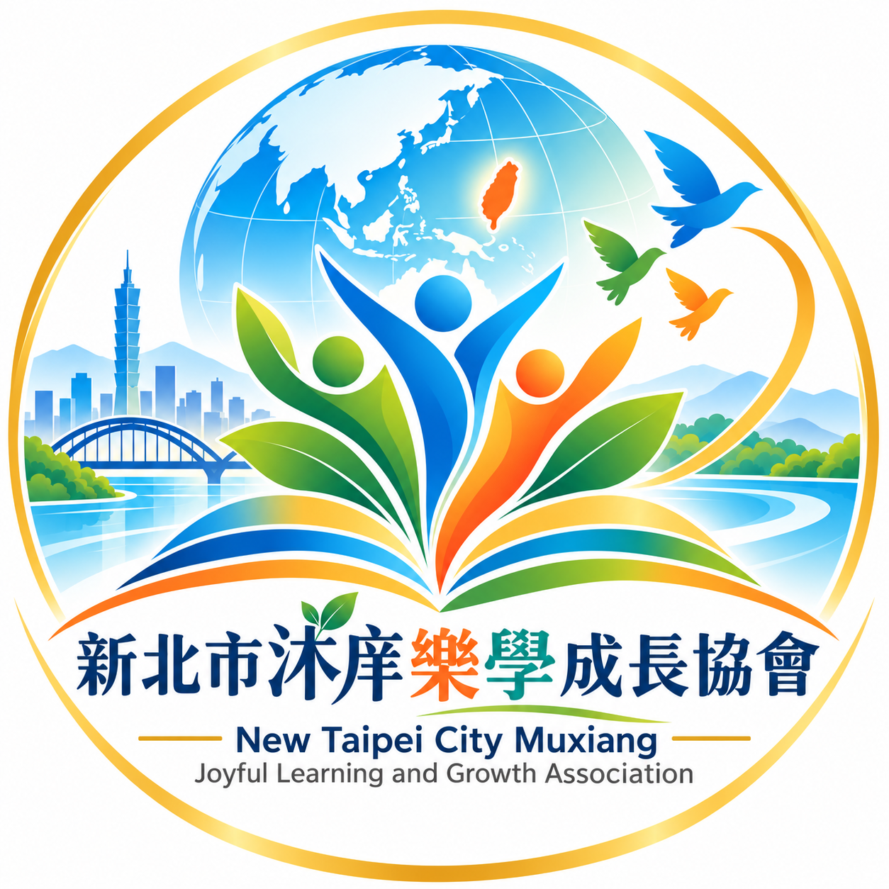

品牌介紹
陪你一起，探索生活中的更多可能
Ruby 品妍入口網站，結合「品妍玩數字」、「Ruby AI 樂學教室」及「新北市沐庠樂學成長協會」三大主題，讓不同年齡、不同需求的訪客，都能找到適合自己的學習方向。
從生命數字的自我探索、日常手機 AI 應用，到社區樂齡共學與交流，這裡希望成為一個願意學習、自在交流、持續成長的地方。
生命探索手機 AI 教學樂齡共學跨世代交流
聯絡 Ruby 品妍 ↗
以學習、探索、成長為核心，整合數位學習、生命探索與協會服務，打造跨世代的樂學成長平台。
三大主題，找到最適合你的成長方式
相信每個年齡都能學習，每次探索都能帶來新的可能。
Ruby 品妍入口網站，結合「品妍玩數字」、「Ruby AI 樂學教室」及「新北市沐庠樂學成長協會」三大主題，讓不同年齡、不同需求的訪客，都能找到適合自己的學習方向。
從生命數字的自我探索、日常手機 AI 應用，到社區樂齡共學與交流，這裡希望成為一個願意學習、自在交流、持續成長的地方。
從手機基本功到新知運用，找到自己的節奏。
用不同角度認識自己，也保留好奇與可能性。
透過實踐、分享與共學，累積人生新體驗。
無論你想探索自己、學習 AI，或參與社區共學，都能從這裡開始。
連結至既有抽卡系統，開啟今天的自我探索。
立即前往 ↗可規劃介紹生命數字與天賦優勢的專題文章。
內容規劃中有興趣了解服務方式，可以使用 LINE 官方帳號洽詢。
聯絡詢問 →前往 Ruby 的 YouTube 頻道觀看相關內容。
觀看頻道 ↗以下為教學主題介紹，實際開課日期、地點及費用依正式公告。
字體設定、語音輸入、常見操作與數位生活基本功。
從生活問題開始，練習提問與 AI 資訊查詢。
練習早安圖、照片應用及趣味影像創作。
認識 Gmail、Google 相簿及雲端儲存概念。
帳號安全、可疑訊息判斷及常見防詐提醒。
相片分享、訊息整理與日常溝通小技巧。
本專區用於分享協會相關資訊，包括理念介紹、課程與活動公告、志工招募、會員服務及活動成果。正式活動細節以協會實際公告為準。
課程公告、品牌訊息與協會活動，都在這裡集中查看。
讓日常學習更便利，一次整理好實用入口與練習方法。
前往頻道觀看實際發布的影片。
開啟 YouTube ↗開啟品妍玩數字的既有網站。
前往 rubysay.com ↗課程資訊與相關問題，可透過官方帳號聯繫。
加入 LINE ↗查詢日後公布的課程活動與日期。
查看行事曆 →可勾選完成項目，進度只存在此裝置的瀏覽器中。
已完成 0 / 5 項
可從手機基本操作與生活提問練習開始。實際分班與先備條件請依各期課程公告。
可查看最新消息與活動行事曆。若尚未公告，請透過 LINE 官方帳號洽詢。
從「品妍玩數字」入口點選「每日抽卡」，前往既有網站 rubysay.com 使用。
依月份瀏覽行事曆，正式活動資料將於公告後加入。
為未來的課程參與者及協會會員預留便利的服務空間。
未來可公布正式入會辦法與申請流程。
未來可建立報名紀錄及提醒功能。
未來可依會員權限提供專屬資源。
課程合作、活動邀約、學習詢問，都歡迎與 Ruby 品妍聯繫。
社群平台
課程消息、學習分享與最新影片，從熟悉的平台持續互動。
LINE 官方帳號
掃描原始 QR Code，或點選按鈕加入好友。
一鍵加入 LINE 好友 ↗官方網址：lin.ee/4HfPuwGYouTube 官方頻道
歡迎前往 Ruby 品妍的頻道，觀看已發布的教學與分享。